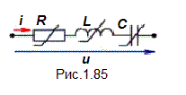
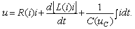

Любую электрическую цепь можно считать
линейной только в ограниченном диапазоне изменения параметров, воздействующих
на цепь сигналов. Как только частота, токи и напряжения достигнут достаточно
больших величин, начинают сказываться нелинейные эффекты: изменяется температура,
а значит и сопротивление проводников, ферромагнитные сердечники насыщаются,
нарушается пропорциональность между поляризацией и полем в диэлектриках и пр. Кроме того, отдельные элементы цепей изначально имеют нелинейные сопротления (варисторы, диоды, термисторы и др.), индуктивности (катушки с ферромагнитным сердечником с подмагничиванием), ёмкости (варикапы, вариконды и др.).
Нелинейности характеристик элементов электрической цепи вызывают искажения сигналов при передаче и преобразовании информации, изменение форм кривых тока и напряжения в энергетических установках и т. д. С другой стороны, только при помощи нелинейных элементов могут быть созданы важнейшие электронные устройства: усилители, стабилизаторы, преобразователи частоты, выпрямители и др. Развитие автоматики, телемеханики, радиотехники, вычислительной техники и др. вообще невозможно без применения нелинейных цепей и разработки всё новых нелинейных элементов.
В простейшем случае напряжение на ветви (рис. 1.85), содержащей последовательно включённые нелинейные элементы: резистор с сопротивлением R(i) или R(u), индуктивную катушку с индуктивностью L(i) или L(Ψ) и конденсатор с ёмкостью С(u) или С(q), можно записать в виде нелинейного уравнения
